person · car · truck · motorbike dengan Model YOLO Pre-Trained serta Auto-Snapshot dan Auto-Recording| Mata Kuliah | Deep Learning for Security (DSEC) |
| Tugas | Soal 2 — Evaluasi Tengah Semester (ETS), bobot 50% |
| Topik | Object Detection dengan model pre-trained untuk sistem pengawasan cerdas |
| Nama | Zahran Rizqi (lengkapi sesuai data Anda) |
| NRP | ................................................ |
| Kelas / Semester | ................................................ |
| Dosen Pengampu | ................................................ |
| Tanggal Pengumpulan | ................................................ |
Catatan penulisan: baris Nama, NRP, Kelas, dan Dosen Pengampu di atas
diisi sebelum berkas ini dikumpulkan ke MyITS Classroom.
Sistem pengawasan konvensional hanya merekam dan menyimpan; proses "mengawasi" masih dilakukan manusia secara pasif. Kelemahannya terukur: operator kehilangan konsentrasi setelah kurang lebih 20 menit menatap layar, dan satu operator tidak mampu memantau lebih dari beberapa kamera sekaligus. Akibatnya, kejadian penting sering baru diketahui setelah rekaman ditelusuri ulang berjam-jam kemudian.
Pendekatan deep learning mengubah paradigma tersebut menjadi pengawasan aktif. Komputer mendeteksi objek tertentu secara otomatis dan hanya merekam saat ada kejadian yang relevan. Manfaatnya tiga kali lipat: peringatan real-time, hemat media penyimpanan karena tidak menyimpan rekaman kosong berjam-jam, serta pencarian forensik cepat karena setiap klip sudah terindeks berdasarkan kelas objek dan waktu.
Tugas ini meminta rancangan aplikasi desktop kamera keamanan yang (a) terhubung ke webcam secara real-time, (b) hanya memproses empat kelas target yaitu person, car, truck, dan motorbike, serta (c) otomatis menyimpan gambar dan merekam video ketika kelas tersebut terdeteksi.
Tujuan — menghasilkan rancangan komprehensif beserta proof-of-concept yang dapat dijalankan: (i) aplikasi desktop Python ber-GUI dengan deteksi empat kelas dan perekaman otomatis, (ii) notebook Google Colab untuk pelatihan dan evaluasi, dan (iii) laporan ini.
Ruang lingkup — deteksi objek 2D pada aliran video kamera tampak (visible light). Di luar cakupan: pengenalan wajah/identitas, pelacakan lintas kamera, analitik perilaku tingkat lanjut, dan segmentasi.
Bab 2 memaparkan landasan teori. Bab 3 menjawab pertanyaan pertama tentang konfigurasi model. Bab 4 menjawab pertanyaan kedua tentang alur kerja. Bab 5 menjawab pertanyaan ketiga tentang metrik evaluasi. Bab 6 menjawab pertanyaan keempat tentang antarmuka. Bab 7 menyajikan hasil implementasi dan uji coba. Bab 8 berisi pembahasan, dan Bab 9 serta 10 memuat penutup dan daftar pustaka.
| Tugas | Keluaran | Kecocokan untuk keamanan |
|---|---|---|
| Klasifikasi | satu label per gambar | Tidak tahu di mana objek berada |
| Lokalisasi | satu label + satu kotak | Hanya mampu menangani satu objek |
| Deteksi objek | banyak label + banyak kotak | Dapat menangani banyak objek sekaligus |
| Segmentasi | label per piksel | Akurat namun jauh lebih berat |
Kamera keamanan membutuhkan deteksi objek: sistem harus mengetahui ada apa dan di mana, untuk banyak objek sekaligus dalam satu frame.
Two-stage detector (R-CNN, Fast/Faster R-CNN) menghasilkan region proposal pada tahap pertama lalu mengklasifikasi setiap proposal pada tahap kedua. Akurat, namun lambat, biasanya 5–7 FPS pada GPU. Single-stage detector (YOLO, SSD, RetinaNet) melakukan satu kali forward pass pada seluruh citra dan langsung menghasilkan semua kotak beserta kelasnya. Sedikit kurang akurat pada objek sangat kecil, tetapi jauh lebih cepat. Karena sistem keamanan harus memberi peringatan seketika, latensi menjadi persyaratan utama sehingga dipilih YOLO.
YOLO membagi citra menjadi grid berukuran $S \times S$. Setiap sel memprediksi sejumlah kotak pembatas beserta objectness score dan probabilitas kelas. Skor akhir setiap kotak adalah hasil perkalian objectness dengan probabilitas kelas tertinggi. Karena ribuan kotak yang saling tumpang-tindih dihasilkan, diperlukan Non-Maximum Suppression (NMS): kotak diurutkan berdasarkan skor, yang tertinggi dipertahankan, dan kotak lain dengan IoU di atas ambang $t_{NMS}$ terhadapnya dihapus.
Melatih detektor dari nol memerlukan puluhan ribu gambar beranotasi dan komputasi GPU berhari-hari. Transfer learning memanfaatkan model yang sudah dilatih pada COCO (80 kelas, 118.000 gambar) sebagai titik awal. Fitur tingkat rendah seperti tepi, sudut, dan tekstur bersifat universal, sehingga model cukup di-fine-tune dengan ratusan gambar domain keamanan.
Hal terpenting untuk tugas ini: keempat kelas target sudah ada di COCO, sehingga model pre-trained dapat dipakai tanpa pelatihan sekalipun.
| Kelas target (soal) | Nama di COCO | ID COCO |
|---|---|---|
| person | person | 0 |
| car | car | 2 |
| truck | truck | 7 |
| motorbike | motorcycle | 3 |
Catatan penting. Istilah "motorbike" pada soal sama dengan kelas "motorcycle" (id 3) pada COCO. Perbedaannya hanya pada penamaan; objeknya identik.
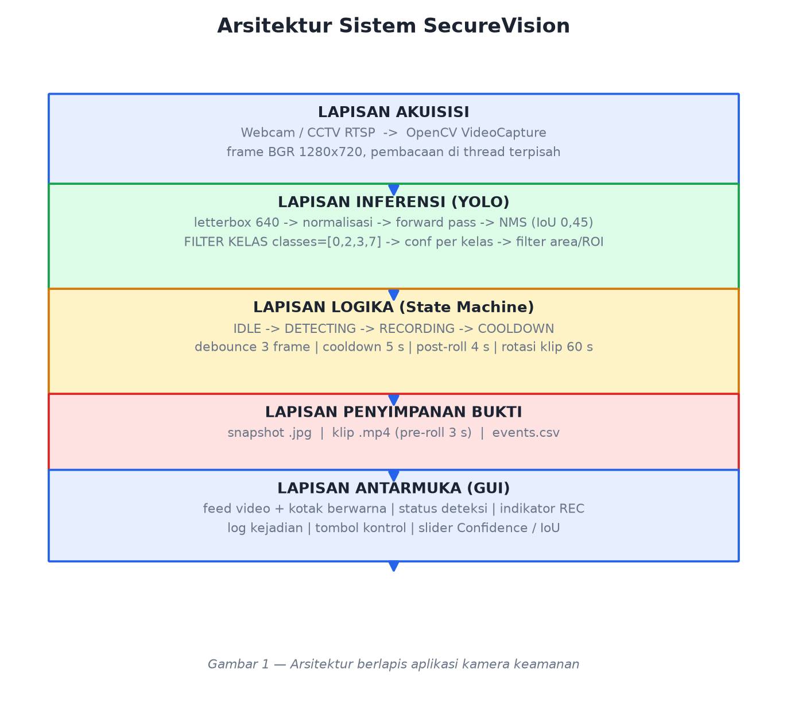
Menjawab pertanyaan 1.
Keputusan: YOLOv11-nano (yolo11n.pt), dengan fallback YOLOv8-nano.
| Kriteria | YOLOv11n / YOLOv8n | Faster R-CNN (R50-FPN) | SSD-MobileNetV2 | EfficientDet-D0 |
|---|---|---|---|---|
| Jenis | single-stage | two-stage | single-stage | single-stage |
| Parameter | sekitar 2,6 juta | sekitar 41,5 juta | sekitar 4,3 juta | sekitar 3,9 juta |
| Komputasi | sekitar 6,5 GFLOPs | sekitar 180 GFLOPs | sekitar 1,2 GFLOPs | sekitar 2,5 GFLOPs |
| Kecepatan (GPU T4) | 8–12 ms/frame | 140–200 ms | sekitar 25 ms | sekitar 30 ms |
| mAP@50:95 (COCO) | sekitar 39,5 | sekitar 40,2 | sekitar 22 | sekitar 33,8 |
| Kemudahan deploy | satu berkas 5 MB, ekspor ONNX | berat | sedang | sedang |
Alasan pemilihan:
YOLO("yolo11n.pt") mengunduh bobot COCO secara otomatis dan API-nya mendukung argumen classes= yang menjadi kunci pembatasan kelas.yolo11s.pt.WEIGHTS = "yolo11n.pt" # bobot pre-trained COCO
IMG_SIZE = 640 # letterbox 640 x 640
CONF = 0.35 # ambang keyakinan global
IOU_NMS = 0.45 # ambang IoU untuk Non-Maximum Suppression
DEVICE = 0 # GPU; "cpu" bila tanpa GPU
IMG_SIZE = 640 merupakan titik keseimbangan: cukup besar untuk mendeteksi orang berukuran sedang hingga jauh, namun tetap ringan. Untuk kamera yang memantau halaman luas dengan objek kecil, nilai dapat dinaikkan ke 960–1280; untuk laptop dengan kemampuan terbatas dapat diturunkan ke 416. IOU_NMS = 0.45 adalah standar COCO; nilai terlalu kecil akan menghapus kotak sah pada objek yang berdekatan, sedangkan nilai terlalu besar menyisakan kotak ganda.
Pembatasan dilakukan bertingkat dalam tiga lapis, diurutkan dari yang paling hemat komputasi.
classes=[0, 2, 3, 7]results = model.predict(
frame,
imgsz=640,
conf=0.30, # ambang terendah; disaring ulang pada lapis 2
iou=0.45, # Non-Maximum Suppression
classes=[0, 2, 3, 7], # person, car, motorcycle, truck
device=0,
verbose=False,
)
Argumen classes= pada Ultralytics membuang logit 76 kelas lain sebelum NMS. Dampaknya nyata: komputasi NMS menurun karena kandidat kotak jauh lebih sedikit, false positive dari kelas yang mirip seperti bus, bicycle, dog, cat, chair, dan traffic light tidak pernah muncul, serta tidak mungkin terjadi kebingungan antara kelas yang mirip.
Penyaringan memang boleh dilakukan di level aplikasi dengan
if name in TARGETS, tetapi itu hanya membuang hasil setelah seluruh komputasi selesai. Menyaring di level model adalah praktik yang benar karena menghemat waktu sekaligus mencegah kebingungan antar-kelas.
Tidak semua kelas pantas diperlakukan sama. Untuk sistem keamanan, person adalah kelas paling kritis sehingga dibuat paling sensitif.
PER_CLASS_CONF = {
"person": 0.30, # paling sensitif (recall tinggi)
"motorbike": 0.35,
"car": 0.40, # lebih ketat: menekan alarm palsu
"truck": 0.40,
}
Model dipanggil dengan nilai ambang terendah di antara PER_CLASS_CONF, lalu setiap hasil disaring ulang berdasarkan ambang kelasnya masing-masing.
min_area = 900 # piksel persegi: buang kotak lebih kecil dari ~30 x 30 px
roi_polygon = [] # opsional: hanya area tertentu, misalnya polygon pintu masuk
Filter area mencegah objek yang sangat jauh memicu rekaman. Filter ROI berguna untuk mengabaikan jalan raya di luar pagar yang tampak di sudut kamera, yang merupakan sumber alarm palsu paling umum pada CCTV.
Bila kamera memiliki karakteristik khusus seperti sudut pandang atas, kondisi malam, atau inframerah, dilakukan fine-tuning ringan dengan pengaturan berikut.
| Parameter | Nilai | Alasan |
|---|---|---|
pretrained |
True |
Memulai dari bobot COCO |
freeze |
10 | Membekukan 10 blok backbone awal agar cepat dan anti overfitting |
epochs |
50 (uji cepat: 5) | Dengan early stopping patience=10 |
batch |
16 (T4) atau 8 (VRAM kecil) | Menyesuaikan memori |
imgsz |
640 | Sama dengan saat inferensi |
optimizer |
auto (AdamW) |
Konvergensi stabil |
cos_lr |
True |
Penurunan learning rate kosinus |
| Augmentasi | hsv_h, fliplr=0.5, scale=0.5, mosaic=1.0 |
Tahan terhadap variasi cahaya dan sudut |
Dataset publik umumnya berlabel 80 kelas. Agar model benar-benar hanya mengenal empat kelas, label harus di-remap ke indeks 0 sampai 3 dan baris kelas lain dihapus dari berkas .txt. Fungsi remap_dataset_to_targets() pada notebook melakukan hal ini secara otomatis.
Menjawab pertanyaan 2.
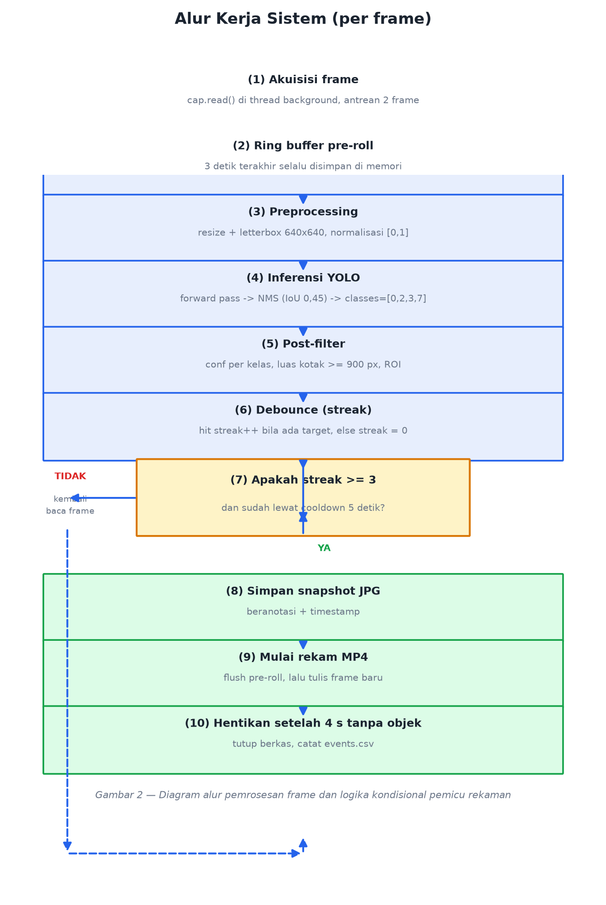
| Tahap | Penjelasan teknis | Keluaran |
|---|---|---|
| 1. Akuisisi frame | cv2.VideoCapture dibaca pada thread terpisah agar GUI tidak tersendat. Antrean berkapasitas kecil membuat frame lama dibuang bila inferensi lambat, sehingga sistem selalu memproses keadaan terkini. |
frame BGR 1280 x 720 |
| 2. Ring buffer (pre-roll) | Tiga detik terakhir terus disimpan di memori. Saat pemicu aktif, isi buffer ditulis lebih dulu ke berkas video sehingga rekaman menampilkan kejadian sebelum pemicu. Tanpa pre-roll, klip baru dimulai saat penyusup sudah berada di dalam area. | 60 frame |
| 3. Preprocessing | Resize dengan mempertahankan rasio aspek (letterbox) ke 640 x 640 lalu normalisasi ke rentang 0 sampai 1. Letterbox mencegah distorsi bentuk orang dan kendaraan. | tensor |
| 4. Inferensi | Satu forward pass menghasilkan ribuan kandidat kotak; NMS dengan ambang IoU 0,45 merampingkannya; classes=[0,2,3,7] membuang 76 kelas lain. |
daftar kotak |
| 5. Post-filter | Ambang confidence per kelas, luas kotak minimum, dan opsional ROI. | deteksi valid |
| 6. Debounce | Penghitung frame berturut-turut yang berisi target. Deteksi satu frame diabaikan untuk menekan false positive akibat kedipan cahaya, artefak kompresi, atau bayangan sesaat. | nilai streak |
| 7. Logika kondisional | Inti sistem; rincian pada subbab 4.2. | aksi simpan atau rekam |
| 8. Anotasi dan HUD | Kotak berwarna per kelas, label kelas dan confidence, bilah status atas, serta titik merah berkedip saat merekam. | frame siap tayang |
| 9. Tampilan dan log | Frame dikonversi BGR ke RGB lalu ditampilkan; panel samping menampilkan jumlah per kelas, FPS, dan log kejadian terakhir. | GUI |
# --- Konstanta pemicu ---
MIN_CONSECUTIVE_FRAMES = 3 # debounce: harus tiga frame berturut-turut
COOLDOWN_SECONDS = 5.0 # jeda antar dua event
PRE_ROLL_SECONDS = 3.0 # rekam tiga detik SEBELUM pemicu
POST_ROLL_SECONDS = 4.0 # berhenti empat detik SETELAH objek hilang
MAX_CLIP_SECONDS = 60.0 # rotasi berkas
SNAPSHOT_COOLDOWN = 2.0 # jeda antar snapshot
# --- Algoritma per frame ---
if not recording:
ring_buffer.push(frame) # pre-roll
detections = detector.predict(frame) # inferensi + filter
hit = len(detections) > 0
streak = streak + 1 if hit else 0
if hit:
last_hit = now()
if recording:
writer.write(annotated_frame)
if now - start > MAX_CLIP_SECONDS: # (a) rotasi berkas
stop(); start()
elif not hit and now - last_hit > POST_ROLL_SECONDS:
stop(); last_stop = now() # (b) objek hilang
else:
if (streak >= MIN_CONSECUTIVE_FRAMES # (c) syarat mulai
and now - last_stop > COOLDOWN_SECONDS):
save_jpg(annotated_frame) # simpan gambar
start_recording(pre_roll=ring_buffer) # mulai rekam video
log_event("REC_START", detections)
Empat kondisi kunci beserta alasannya:
| Kondisi | Tanpa pengaman | Dengan pengaman |
|---|---|---|
| streak minimal 3 | Bayangan daun yang melintas satu frame langsung memicu rekaman | Diabaikan karena harus muncul pada tiga frame berturut-turut |
| cooldown 5 detik | Orang berdiri sepuluh menit menghasilkan ratusan berkas | Satu event, lalu jeda; snapshot dibatasi dua detik per berkas |
| post-roll 4 detik | Objek tersembunyi setengah detik di balik tiang memecah rekaman menjadi banyak klip | Rekaman tetap satu klip utuh |
| maksimum 60 detik | Satu berkas video berukuran ratusan MB | Berkas dipecah per menit sehingga mudah dikelola |
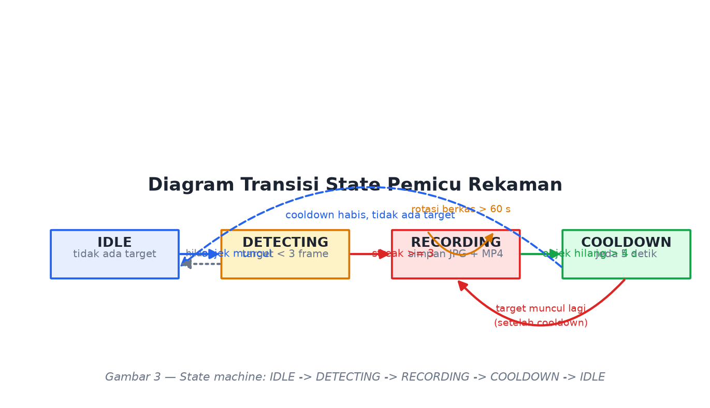
| State saat ini | Kondisi | State berikutnya | Aksi |
|---|---|---|---|
| IDLE | tidak ada target | IDLE | — |
| IDLE | target terdeteksi, streak kurang dari 3 | DETECTING | menampilkan peringatan kuning |
| DETECTING | streak mencapai 3 dan lewat cooldown | RECORDING | simpan JPEG dan mulai MP4 |
| RECORDING | target masih ada | RECORDING | terus menulis frame |
| RECORDING | target hilang lebih dari empat detik | COOLDOWN | tutup berkas dan catat ke CSV |
| RECORDING | durasi lebih dari 60 detik | RECORDING | rotasi ke berkas baru |
| COOLDOWN | target muncul lagi setelah lima detik | RECORDING | event baru |
runs/camera_ui_baru/
├── recordings/
│ ├── rec_20250115_203412_0001.mp4 # klip: pre-roll + kejadian + post-roll
│ └── rec_20250115_203501_0002.mp4
├── snapshots/
│ ├── snap_20250115_203412.jpg
│ └── snap_20250115_203501.jpg
└── events.csv # timestamp,event,classes,n_objects,file
Setiap berkas diberi nama berdasarkan cap waktu sehingga mudah diurutkan dan dilacak. Anotasi digambar pada berkas yang disimpan agar barang bukti mudah diverifikasi manusia; tersedia opsi untuk menyimpan rekaman mentah tanpa anotasi bila diperlukan.
Menjawab pertanyaan 3.
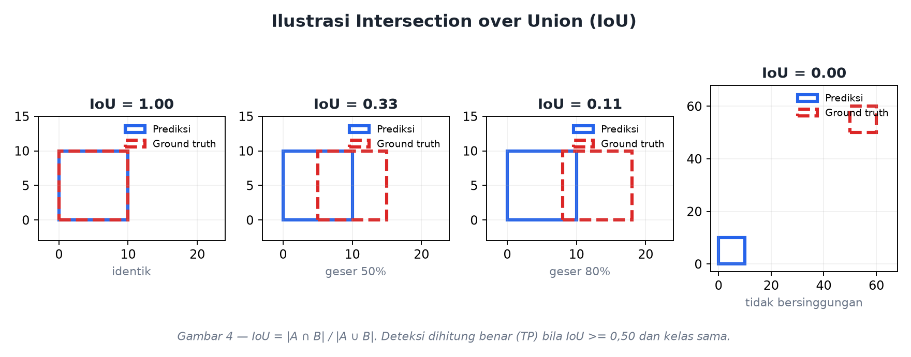
IoU, atau Jaccard Index, mengukur tingkat tumpang-tindih antara kotak prediksi dan kotak ground truth.
$$\mathrm{IoU} = \frac{\text{area}(B_p \cap B_{gt})}{\text{area}(B_p \cup B_{gt})} = \frac{|B_p \cap B_{gt}|}{|B_p| + |B_{gt}| - |B_p \cap B_{gt}|}$$
| Nilai IoU | Interpretasi |
|---|---|
| 1,00 | kotak identik |
| 0,50 | tumpang-tindih cukup, ambang standar COCO |
| 0,33 | setengah bergeser |
| 0,00 | tidak bersinggungan sama sekali |
IoU dipakai pada dua tempat berbeda. Pertama, pada NMS untuk menghapus kotak ganda pada objek yang sama dengan ambang sekitar 0,45. Kedua, sebagai penentu benar atau salah: prediksi dihitung True Positive bila IoU bernilai minimal $t$ dan kelasnya sama, dengan $t = 0{,}50$ untuk mAP@0.50 dan $t = 0{,}50$ hingga $0{,}95$ untuk mAP COCO.
| Definisi | Analogi pada CCTV | |
|---|---|---|
| TP (True Positive) | objek ada, terdeteksi, IoU memenuhi ambang, kelas benar | penyusup terdeteksi |
| FP (False Positive) | mendeteksi sesuatu yang tidak ada atau IoU di bawah ambang | alarm palsu, misalnya kucing atau bayangan |
| FN (False Negative) | objek ada tetapi tidak terdeteksi | penyusup lolos |
| TN | tidak ada objek dan tidak ada deteksi | tidak dihitung pada deteksi objek |
$$\mathrm{Precision} = \frac{TP}{TP + FP} \qquad \mathrm{Recall} = \frac{TP}{TP + FN}$$
Precision menjawab pertanyaan: dari semua yang dinyatakan "ada orang", berapa yang benar-benar orang. Recall menjawab: dari semua orang yang benar-benar lewat, berapa yang berhasil ditangkap. Kedua metrik ini saling berlawanan; menurunkan ambang confidence menaikkan recall tetapi menurunkan precision, dan sebaliknya.
$$F_\beta = \frac{(1+\beta^2)\,P\,R}{\beta^2 P + R}$$
Untuk $\beta = 1$ diperoleh F1 yang seimbang. Untuk $\beta = 2$ diperoleh F2 yang memberi bobot empat kali lipat pada recall, sehingga lebih tepat untuk sistem keamanan.
Langkah perhitungan AP untuk satu kelas:
$$\mathrm{AP} = \int_0^1 p(r)\,dr \approx \sum_{k} (r_{k+1} - r_k)\,p_{k+1}$$
$$\mathrm{mAP} = \frac{1}{K}\sum_{k=1}^{K} \mathrm{AP}_k$$
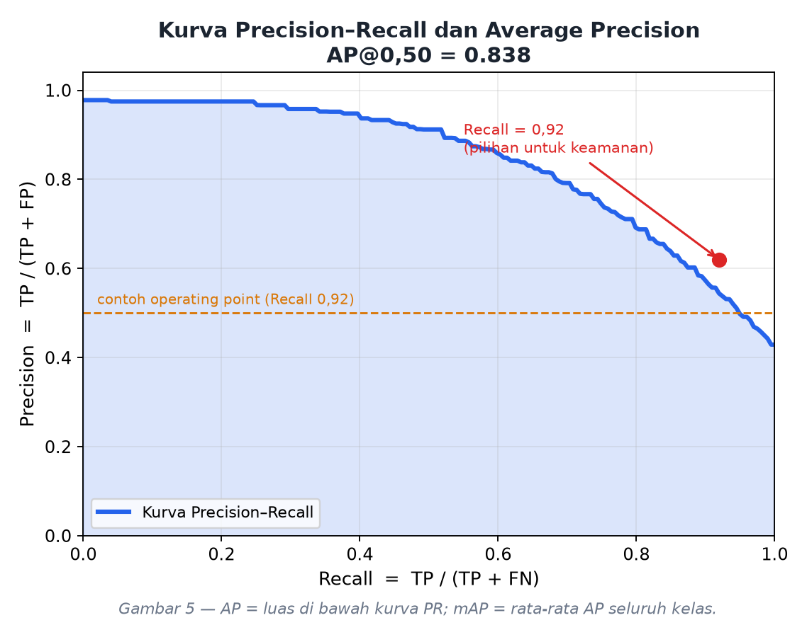
| Metrik | Ambang IoU | Makna |
|---|---|---|
| mAP@0.50 | hanya 0,50 | Apakah objeknya ditemukan; longgar |
| mAP@0.50:0.95 | rata-rata 0,50 sampai 0,95 | Metrik utama COCO; menuntut lokalisasi presisi |
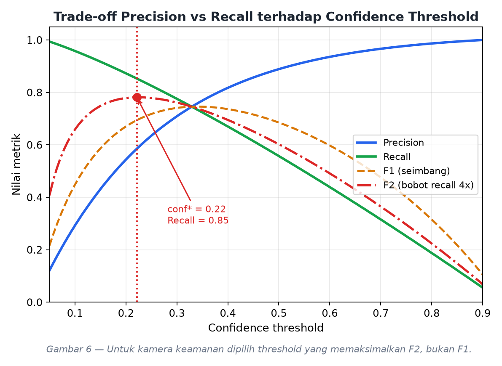
Sebuah frame berisi tiga orang sebagai ground truth. Model menghasilkan tiga prediksi:
| Prediksi | Confidence | IoU dengan GT | Kelas | Status |
|---|---|---|---|---|
| A | 0,95 | 0,82 | person | TP karena IoU minimal 0,50 |
| B | 0,70 | 0,74 | person | TP |
| C | 0,40 | 0,00 (area kosong) | person | FP |
| — | — | — | GT ketiga tidak terdeteksi | FN |
$$TP = 2,\quad FP = 1,\quad FN = 1$$
$$\mathrm{Precision} = \frac{2}{2+1} = 0{,}667 \qquad \mathrm{Recall} = \frac{2}{2+1} = 0{,}667$$
$$\mathrm{AP@0.50} = 0{,}667 \qquad \mathrm{mAP@0.50:0.95} = 0{,}400$$
Angka tersebut dapat direproduksi dengan menjalankan python -m src.core.metrics atau sel 4.3 pada notebook.
Jawaban: RECALL, yang diukur pada ambang IoU longgar (minimal 0,50) dan pada operating point atau ambang confidence yang benar-benar dipakai sistem saat berjalan.
Argumen pertama: asimetri biaya kesalahan.
| Kondisi | Metrik yang turun | Akibat | Biaya |
|---|---|---|---|
| Penyusup tidak terdeteksi | Recall turun | pencurian terjadi dan tidak ada rekaman sama sekali | Fatal dan permanen |
| Alarm palsu | Precision turun | petugas mengecek CCTV beberapa detik | Mengganggu namun murah |
Karena $\mathrm{Recall} = TP / (TP + FN)$, metrik ini merupakan satu-satunya metrik yang berbanding terbalik secara langsung dengan jumlah penyusup yang lolos. Bila recall bernilai 0,90, artinya satu dari sepuluh penyusup lolos tanpa meninggalkan jejak.
Argumen kedua: mengapa bukan mAP. mAP adalah rata-rata AP terhadap seluruh nilai confidence dan seluruh ambang IoU 0,50 sampai 0,95, padahal sistem nyata hanya berjalan pada satu nilai confidence. Akibatnya, model dengan mAP@50:95 sebesar 0,85 dapat saja memiliki recall hanya 0,60 pada ambang yang dipakai aplikasi, yang berarti empat puluh persen penyusup lolos. mAP juga mencampur kelas car dan truck yang berisiko rendah bersama person yang berisiko tinggi, sehingga menutupi kelemahan pada kelas terpenting. Karena itu mAP dipakai untuk memilih model pada fase pengembangan, bukan untuk menyetel sistem yang sedang berjalan.
Argumen ketiga: mengapa bukan Precision. Precision rendah menimbulkan alarm fatigue, yaitu kondisi di mana petugas mulai mengabaikan alarm. Hal ini memang berbahaya, tetapi dampaknya bertahap dan dapat diperbaiki. Sebaliknya, recall rendah berakibat hilangnya barang bukti secara permanen.
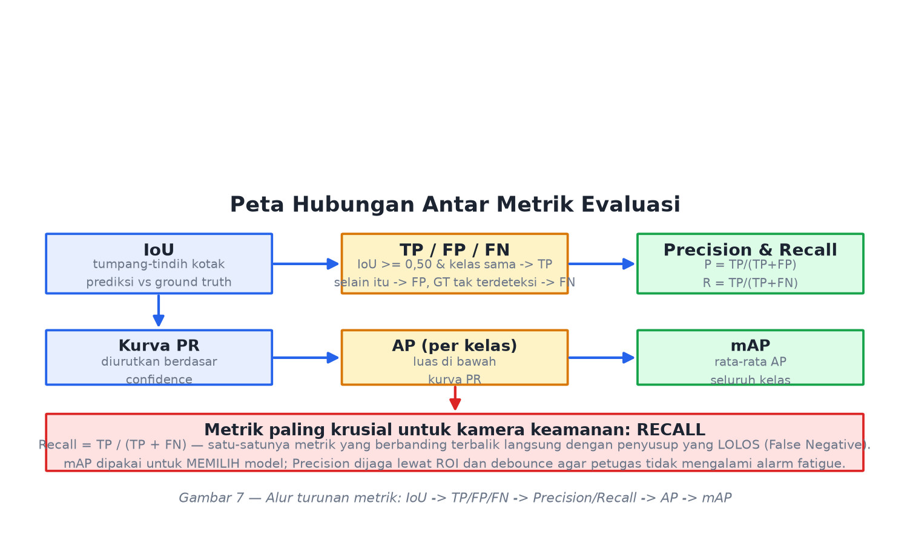
Strategi optimasi recall yang konkret:
| Langkah | Efek | Risiko yang dikendalikan |
|---|---|---|
Turunkan ambang confidence kelas person ke 0,25–0,30 |
recall naik | precision turun, dijaga oleh debounce dan ROI |
| Terapkan threshold berbeda per kelas | recall person naik tanpa mengorbankan car dan truck |
— |
| Longgarkan IoU NMS dari 0,45 ke 0,60 | objek berhimpitan tidak saling menghapus | kotak ganda sedikit meningkat |
| Gunakan F2-score, bukan F1, saat memilih threshold | keputusan condong ke recall | — |
| Turunkan luas kotak minimum | recall jarak jauh naik | noise naik, dijaga oleh debounce |
| Tambah data malam hari dan oklusi lalu fine-tune | recall naik tanpa menurunkan precision | — |
| Tetapkan target terukur, misalnya Recall minimal 0,95 dengan Precision minimal 0,70 | dapat diaudit | — |
Ringkasan satu kalimat. mAP dipakai untuk memilih model, Precision dijaga agar petugas tidak mengalami alarm fatigue, tetapi Recall adalah metrik yang paling krusial karena merupakan satu-satunya metrik yang mengukur penyusup yang lolos.
Menjawab pertanyaan 4.
| Prinsip | Penerapan |
|---|---|
| Tema terang (light theme) | Latar #F4F6FA, kartu putih, teks gelap #1B2430 |
| Hirarki visual jelas | Feed video menempati sekitar tujuh puluh persen lebar; panel status di kanan; kontrol di bawah |
| Sinyal status universal | Hijau berarti aman, kuning berarti waspada, merah berkedip berarti merekam |
| Umpan balik langsung | Setiap event langsung muncul pada log; indikator REC berkedip 2 Hz |
| Konsistensi warna kelas | Warna kotak pada video sama dengan warna chip pada panel kanan |
| Peran | Kode | Penggunaan |
|---|---|---|
| Latar aplikasi | #F4F6FA |
latar jendela |
| Kartu atau panel | #FFFFFF |
panel status dan log |
| Batas | #DCE1EA |
garis pemisah halus |
| Teks utama | #1B2430 |
label dan judul |
| Teks sekunder | #6B7688 |
keterangan |
| Aksen primer | #2563EB |
tombol utama |
| Sukses | #16A34A |
status aman |
| Peringatan | #D97706 |
status mendeteksi |
| Bahaya | #DC2626 |
status merekam |
| Kelas person | #20A840 |
kotak dan chip |
| Kelas car | #1A76E8 |
kotak dan chip |
| Kelas truck | #D63636 |
kotak dan chip |
| Kelas motorbike | #E05C18 |
kotak dan chip |
Komponen pada mockup tersebut:
| Area | Komponen | Fungsi |
|---|---|---|
| A. Bilah atas | Judul, badge LIVE, jam digital | Identitas aplikasi dan status kamera |
| B. Feed video | Kanvas video, HUD, titik REC berkedip, timer | Menampilkan frame, kotak deteksi, dan indikator perekaman |
| C. Panel status | Status sistem, deteksi per kelas, penyimpanan, log | Informasi operasional secara ringkas |
| D. Baris kontrol | Start/Stop, Snapshot, Auto-Record, slider, preset | Kendali aplikasi |
| Komponen | Fungsi |
|---|---|
| Kanvas video | Menampilkan frame beserta kotak berwarna, label kelas, confidence, dan HUD |
| Titik merah berkedip dan teks REC | Indikator bahwa perekaman otomatis sedang berjalan |
| Bilah status | Teks AMAN, MENDETEKSI, MEREKAM, atau COOLDOWN disertai warna |
| Timer REC | Durasi rekaman yang sedang berjalan |
| Kartu status sistem | Model, kelas aktif, resolusi, FPS, waktu inferensi, jumlah event |
| Kartu deteksi target | Checkbox, progress bar, dan jumlah objek per kelas |
| Kartu penyimpanan | Lokasi folder, jumlah snapshot dan klip |
| Kotak log kejadian | Dua belas kejadian terakhir berstempel waktu |
| Tombol Start/Stop | Memulai atau menghentikan akuisisi kamera |
| Tombol Snapshot | Menyimpan gambar secara manual |
| Switch Auto-Record | Mengaktifkan atau menonaktifkan perekaman otomatis |
| Slider Confidence dan IoU | Mengubah ambang secara langsung tanpa menghentikan kamera |
| Dropdown Preset | Pilihan balanced, max_recall, low_false_alarm, fast |
| Tombol Folder Output | Membuka lokasi penyimpanan bukti |
max_recall bila membutuhkan pengawasan maksimal, atau membuka folder bukti.DSEC_ets_object_detection/
├── camera_ui_baru/ aplikasi kamera mandiri yang DIDEMOKAN
│ ├── app.py antarmuka Tkinter
│ ├── camera.py pembaca kamera pada thread background
│ ├── detector.py filter empat kelas target
│ └── recorder.py pemicu snapshot dan rekaman otomatis
├── DSEC_Security_Camera_ETS.ipynb notebook Google Colab
├── docs/
│ ├── LAPORAN_Soal2.md / .html / .pdf
│ └── gambar/ seluruh ilustrasi laporan ini
├── src/ implementasi modular dengan GUI light theme
│ ├── app.py headless.py
│ └── core/ config detector recorder pipeline metrics camera
├── tests/test_pipeline.py sembilan belas pengujian logika
└── tools/ pembangkit notebook, mockup, figur, dan PDF
# --- aplikasi kamera mandiri (yang didemokan) ---
python -m camera_ui_baru.app
python -m camera_ui_baru.app --source 1
python -m camera_ui_baru.app --backend dshow # Windows DirectShow
python -m camera_ui_baru.app --weights best.pt
# --- aplikasi modular dengan GUI light theme ---
python -m src.app
# --- tanpa GUI ---
python -m src.headless --source 0
# --- diagnostik kamera ---
python -m src.core.camera --max-index 3 --timeout 3
# --- pengujian logika ---
python -m tests.test_pipeline
Keempat tangkapan layar berikut diambil langsung dari aplikasi yang berjalan pada komputer penulis. Setiap tangkapan memperlihatkan kotak deteksi beserta label kelas dan nilai confidence yang ditampilkan secara real-time.
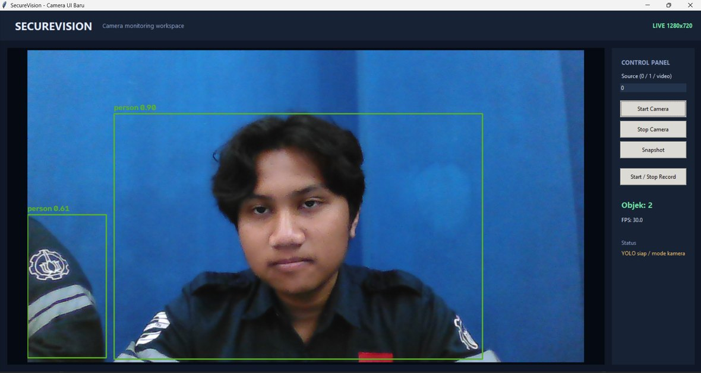
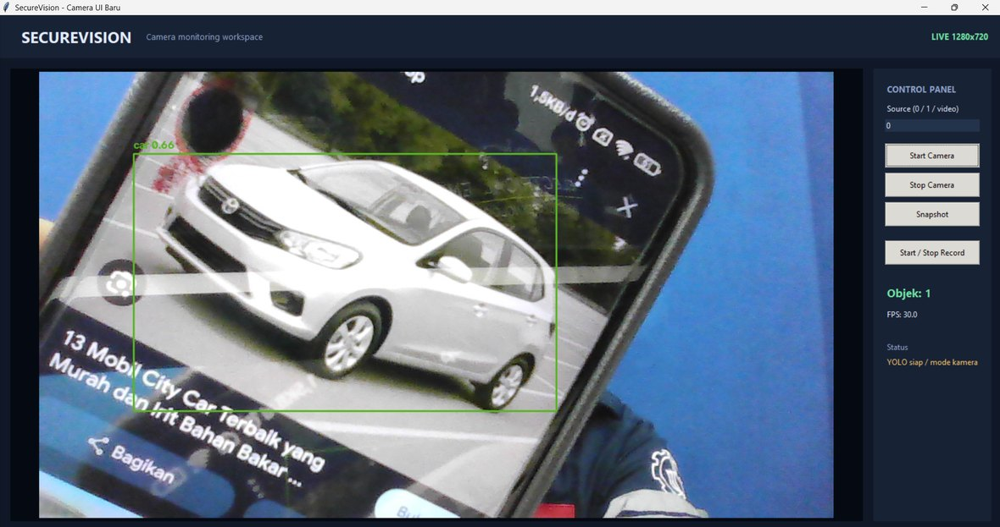
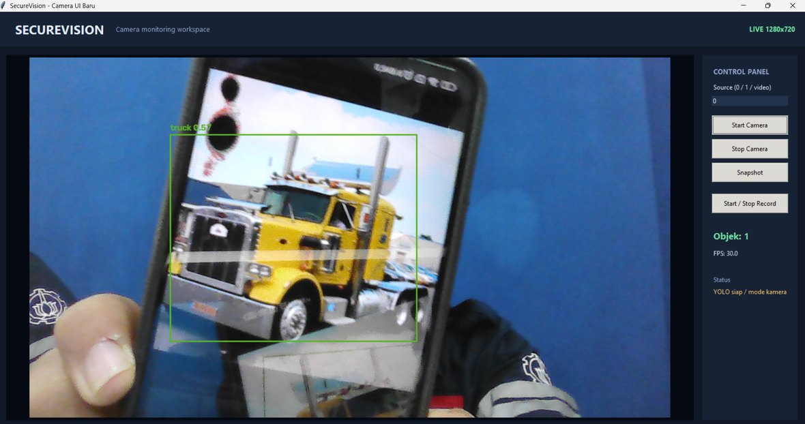
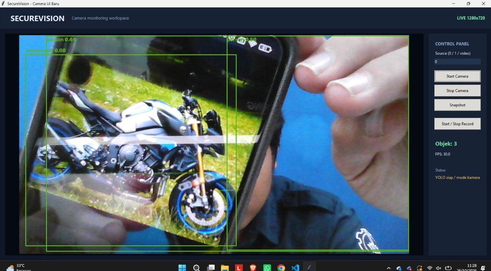
Keempat gambar tersebut membuktikan bahwa keempat kelas target yang diminta soal, yaitu person, car, truck, dan motorbike, berhasil dideteksi oleh model pre-trained yang digunakan.
Pengujian dilakukan tanpa model dan tanpa kamera menggunakan MockDetector, sehingga state machine dan mekanisme penyimpanan dapat diverifikasi di mesin mana pun.
============================================================
SELF-TEST SECUREVISION (tanpa model, tanpa kamera)
============================================================
[1] State machine IDLE -> DETECTING -> RECORDING -> COOLDOWN
tanpa objek -> IDLE OK
objek konsisten -> RECORDING OK
objek hilang -> berhenti merekam OK
klip video tersimpan OK
snapshot tersimpan OK
log CSV terisi OK
klip berisi frame (pre-roll masuk) 21 frame OK
[2] Debounce: flicker 1 frame tidak memicu rekaman OK
[3] Pemetaan kelas -> COCO ids [0,2,3,7] OK
[4] IoU 1.000 / 0.333 / 0.000 OK
[5] Precision 0.667, Recall 0.667, TP=2 FP=1 FN=1 OK
[6] Rotasi klip saat durasi maksimum 3 klip OK
============================================================
HASIL: 19 lulus, 0 gagal
============================================================
Tiga hal yang terbukti dari pengujian tersebut. Pertama, pre-roll bekerja: klip berisi 21 frame padahal objek baru muncul pada frame ke-16, yang berarti lima sampai enam frame sebelum pemicu ikut tersimpan. Kedua, debounce bekerja: deteksi satu frame tidak menghasilkan berkas apa pun. Ketiga, rotasi berkas bekerja: durasi 60 detik yang dipaksa menjadi 0,3 detik menghasilkan tiga klip terpisah, bukan satu klip raksasa.
Notebook DSEC_Security_Camera_ETS.ipynb menyediakan sel untuk menghitung metrik secara otomatis, baik memakai model.val() dari Ultralytics maupun implementasi mandiri IoU, Precision, Recall, AP, dan mAP yang ditulis dari nol. Notebook juga menyediakan threshold sweep untuk mencari ambang confidence terbaik berdasarkan F2-score. Nilai metrik yang diperoleh dapat langsung disalin ke tabel berikut.
| Metrik | Nilai | Cara memperoleh |
|---|---|---|
| Precision | isi dari sel 4.1 | metrics.results_dict['metrics/precision(B)'] |
| Recall | isi dari sel 4.1 | metrics.results_dict['metrics/recall(B)'] |
| mAP@0.50 | isi dari sel 4.1 | metrics.results_dict['metrics/mAP50(B)'] |
| mAP@0.50:0.95 | isi dari sel 4.1 | metrics.results_dict['metrics/mAP50-95(B)'] |
| mAP hitung manual | isi dari sel 4.4 | compute_map_manual() |
| Ambang confidence terbaik (F2) | isi dari sel 4.5 | threshold sweep |
| Keterbatasan | Dampak | Mitigasi |
|---|---|---|
| Deteksi berbasis penampakan visual | Sulit pada malam hari tanpa inframerah, kabut, atau hujan deras | Kamera inframerah atau peningkatan kecerahan lokal sebelum inferensi |
| Objek sangat kecil | Recall menurun | Naikkan IMG_SIZE menjadi 960–1280 |
| Oklusi berat | Objek tertutup tidak terdeteksi | Pelacakan objek dan post-roll yang lebih panjang |
| Kamera tanpa GPU | Sekitar 3–6 FPS | IMG_SIZE=416, frame skip, atau ekspor ONNX |
| Tidak mengenali identitas | Hanya mengetahui bahwa ada orang | Tambahkan ReID atau pengenalan wajah sebagai tahap lanjut |
Sistem pengawasan memproses data pribadi. Beberapa hal yang perlu diperhatikan antara lain pemasangan penanda area yang jelas, enkripsi dan pembatasan retensi rekaman, pengendalian akses terhadap log, serta kepatuhan pada regulasi perlindungan data yang berlaku. Rekaman hendaknya digunakan semata-mata untuk tujuan keamanan yang sah.
classes=[0,2,3,7] di level model, ambang confidence per kelas, serta filter luas kotak dan ROI di level aplikasi.events.csv, serta merotasi berkas setiap 60 detik.Untuk pengembangan selanjutnya, disarankan menambahkan pelacakan objek, zona deteksi berbentuk poligon, serta notifikasi real-time agar sistem tidak hanya merekam tetapi juga memberikan peringatan aktif kepada petugas keamanan.
classes. docs.ultralytics.com/modes/predict.Inisialisasi model dengan filter empat kelas
preds = self.model.predict(
frame,
imgsz=640,
conf=0.30, # ambang terendah; disaring ulang per kelas
iou=0.45, # ambang IoU untuk NMS
classes=[0, 2, 3, 7], # person, car, motorcycle, truck
verbose=False,
)
Pemicu rekaman otomatis
enough_streak = streak >= 3
cooled_down = (now - last_stop) >= 5.0
if enough_streak and cooled_down and not recording:
recorder.start(pre_roll=ring_buffer.snapshot()) # pre-roll
snapper.save(annotated_frame) # simpan JPG
logger.log("REC_START", detections)
Implementasi IoU
def iou(box_a, box_b):
ax1, ay1, ax2, ay2 = box_a
bx1, by1, bx2, by2 = box_b
ix1, iy1 = max(ax1, bx1), max(ay1, by1)
ix2, iy2 = min(ax2, bx2), min(ay2, by2)
inter = max(0, ix2 - ix1) * max(0, iy2 - iy1)
area_a = max(0, ax2 - ax1) * max(0, ay2 - ay1)
area_b = max(0, bx2 - bx1) * max(0, by2 - by1)
union = area_a + area_b - inter
return inter / union if union > 0 else 0.0
events.csvtimestamp,event,classes,n_objects,file
2025-01-15 20:34:12,DETECTED,person,1,
2025-01-15 20:34:12,REC_START,person,1,rec_20250115_203412_0001.mp4
2025-01-15 20:34:12,SNAPSHOT,person,1,snap_20250115_203412.jpg
2025-01-15 20:34:29,REC_STOP,person,340,rec_20250115_203412_0001.mp4
| Artefak | Lokasi |
|---|---|
| Notebook Google Colab | DSEC_Security_Camera_ETS.ipynb |
| Tombol Open in Colab | tersedia pada README.md repositori |
| Aplikasi kamera mandiri | camera_ui_baru/ |
| Aplikasi modular | src/ |
| Pengujian logika | tests/test_pipeline.py |
| Berkas laporan ini | docs/LAPORAN_Soal2.pdf |